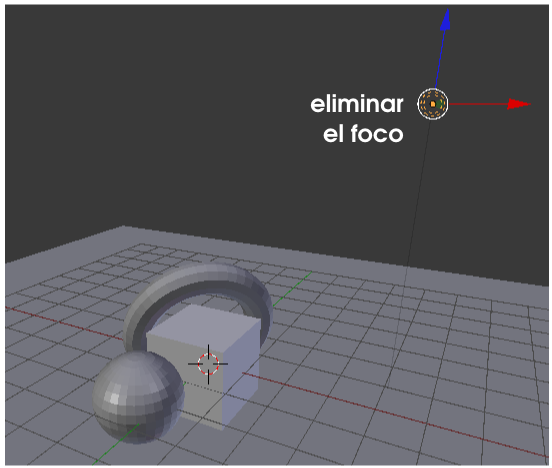
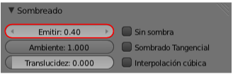
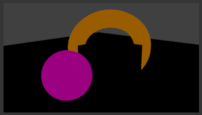
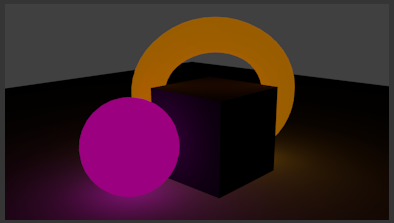
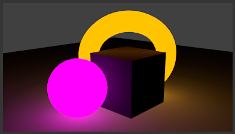
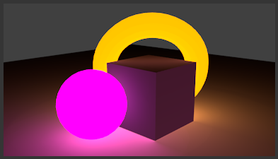

Mundo
Nos despedimos de este primer contacto con los paneles echando un vistazo al llamado Mundo  .
.
Aquí es donde determinamos muchas de las propiedades que hacen que el render final adquiera cierta ambientación. Uno de los aspectos más importantes en un render es la iluminación y no siempre se consiguen efectos de luz usando focos. Por ejemplo, hay iluminaciones de carácter global en las que se entiende que la luz procede de todas partes como si una semiesfera, a modo de cúpula celeste, lanzara rayos luminosos hacia su centro.
Otro efecto luminoso que no requiere focos es el que vamos a ver ahora para justificar nuestra aproximación a este valioso panel Mundo  . Se trata de la iluminación indirecta.
. Se trata de la iluminación indirecta.
Creamos una escena con unos pocos objetos (Añadir/Malla...), como puede verse en la siguiente imagen, y eliminamos el punto de luz que incorpora Blender por defecto.

Podemos darnos el capricho de comprobar cuál es el efecto de hacer un render ("F12") cuando no hay ningún punto luminoso...Como la oscuridad total carece de interés nos dirigimos al panel Material  y le asignamos uno a cada objeto para conseguir lo que se aprecia en la siguiente ilustración.
y le asignamos uno a cada objeto para conseguir lo que se aprecia en la siguiente ilustración.
Al material de la esfera y al del toroide les añadimos la propiedad Emitir en la botonera Sombreado (un valor en torno a 0.40 puede ser aceptable para comenzar).
Esto le otorga al material la propiedad de emitir luz pero un render es muy poco reconfortante...

Le llega el turno al panel Mundo  . Nos vamos a la botonera Iluminación indirecta y la activamos. Sin embargo algo no funciona bien porque sus opciones aparecen anuladas y la propia Iluminación indirecta queda también inutilizada. La solución la encontramos en el mensaje inferior Sólo funciona con el método de Recolección Aproximada. No tenemos que ir muy lejos porque la opción Aproximado esta justo en la botonera de abajo llamada Recolección.
. Nos vamos a la botonera Iluminación indirecta y la activamos. Sin embargo algo no funciona bien porque sus opciones aparecen anuladas y la propia Iluminación indirecta queda también inutilizada. La solución la encontramos en el mensaje inferior Sólo funciona con el método de Recolección Aproximada. No tenemos que ir muy lejos porque la opción Aproximado esta justo en la botonera de abajo llamada Recolección.
Hacemos un render sin variar las opciones Factor y Rebotes de Iluminación indirecta.
Ahora sí; los objetos emiten luz y los colindantes se ven afectados. Subamos el valor de Emitir hasta 2.00 (el máximo) para la esfera y el toroide. El render ganará una buena dosis de efecto luminoso.
Y esto sólo variando dos parámetros. Si aumentamos Rebotes a 4, en el resultado se aprecia que la luz emitida tiene mayor fuerza originando un bonito efecto que hace que el cubo parezca proyectar una sombra gracias al exceso de luz que hay a ambos lados.
